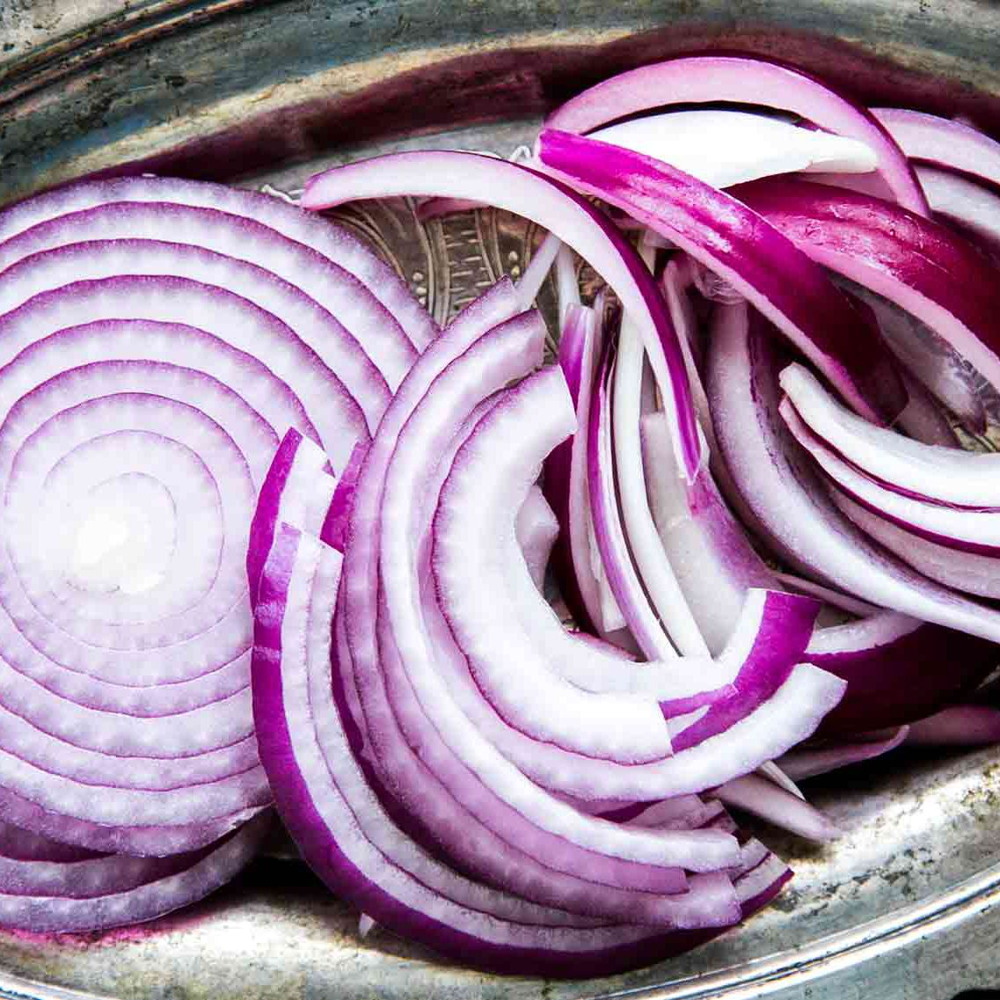

Onion
1. Storage

Fridge temperature: Peeled onions can be stored in the fridge for 10–14 days , while sliced or cut onions can be refrigerated for 7-10 days

Room temperature: should be hung in a dark, warm room (70-75°F - about 21°C) with good air circulation. Bulbs should dry evenly without spoiling within two to three weeks.
2. Characteristics
- Provides: They have antioxidant and anti-inflammatory effects and have been linked to a reduced risk of cancer, lower blood sugar levels, and improved bone health.
- Shouldn’t go with: milk
3. Recommended dish: Sausage stuffing baked in Onions


a. Ingredient
- 8 small onions
- 4 Italian sausages
- ½ onion, minced
- 2 stalks celery, minced
- 1 apple, peeled, cored, and chopped
- 2 teaspoons dried sage, crumbled
- 1 cup breadcrumbs
- ¼ - ½ cup chicken stock
- 1 tablespoon cooking oil
- Salt, to taste

b.Instructions
- Preheat your oven to 375 degrees.
- Carefully hollow out onions using a teaspoon and set aside 8 small onions
- Fry the sausage in a pan for 5 minutes, or until cooked through then remove it from the pan. When it's cool to the touch, use your hands to crumble the sausage into small pieces.
- Heat the oil in the sausage pan. Add the onions, celery, and apple and cook until the onions are transparent. Add the sage and season to taste with salt.
- Add the onion mixture and breadcrumbs to the crumbled sausage. Mix to combine. Add just enough chicken stock to moisten the stuffing.
- Stuff the onions with the stuffing and place them on a greased baking sheet.
- Bake in the oven for 40 minutes, or until onions are soft and the top of the stuffing is brown.